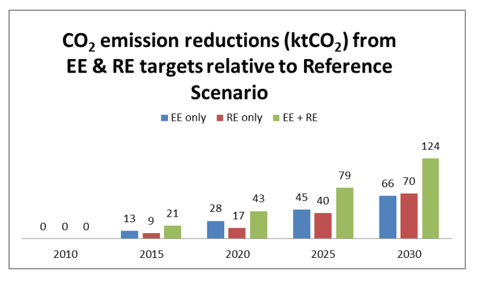

The Republic of Seychelles will reduce its economy-wide absolute GHG emissions by 122.5 ktCO2e (21.4%) in 2025 and estimated 188 ktCO2e in 2030 (29.0%) relative to baseline emissions.
| Time frame and /or period for implementation | Start year: 2020 | Mid-term year: 2025| End year: 2030 | |
| Type of commitment | Absolute economy-wide emission reductions covering public electricity, land transport and solid waste management (LULUCF is excluded) | |
| Estimated quantified emission reductions | 122.5 ktCO2e in 2025 and 188 ktCO2e in 2030 relative to baseline emissions | |
| Financial requirements | The cost of achieving the reduction objective (2030) has been estimated to be at least USD 309 million. Including the cost of energy efficiency measures such as building codes, standards and labels, and energy audits will increase the total cost of implementation, which is expected to be met partly through domestic funding and conditional on international climate financing including through the Green Climate Fund among others. | |
| Type of reference | Emissions reduction relative to Business-As-Usual baselines | |
| Coverage | % national emissions | ~95% |
| Sector | Energy
Waste
[sectors not listed do not contribute significantly to emissions; opportunities for emission reductions in LULUCF are limited] |
|
| Baseline description | Business As Usual scenario of emission projections based on economic growth in the absence of climate change policies, starting from 2010 in the case of public electricity and land transport sub-sectors (to which non-GHG outcomes have been applied), and 2012 for emission from solid waste management (to which a project-based approach is used). | |
| Gases | CO2 CH4 [emissions from other gases are insignificant] |
|
| Geographical boundaries | Republic of Seychelles | |
| Intention to use market-based mechanisms to meet target | No | |
| Land sector accounting approach | Not Applicable | |
| Metric applied | GWP of CH4 = 21 | |
| Methodological approaches | Consistent with methodologies used in the Second National Communication 2011 (1996 IPCC Guidelines); Used combined margin grid emission factor (2014) to calculate emission reductions from public electricity sub-sector |
|
| Planning process |
|
|
| Fair and ambitious | The emissions of Seychelles are less than 0.003% of global emissions. Further, Seychelles are currently a net sink and under the Business-As-Usual scenario it is expected to become a net emitter between 2024 and 2025. In this context, the contribution of Seychelles is considered fair and ambitious. With our contribution, Seychelles will remain a net sink in 2030. The fairness of our contribution also relates to the fact that as a SIDS, adaptation is a higher priority for Seychelles. | |
| Vulnerabilities | Increased Resilience from |
|---|---|
| Critical Infrastructure | Climate change adaptation to be mainstreamed in all sectors with critical infrastructure Planning process for all new developments, with associated improvements in the building codes and their rigorous enforcement |
| Tourism | Greater co-management of the sector by the Ministry of Tourism and Department of Risk and Disaster Management as well as with the Ministry of Environment, Energy and Climate Change |
| Food Security | A sustainable modern agriculture supported by new and innovative technologies across all food production supply and value chains, and by skilled and qualified human resources and integrated with the Blue Economy and Seychelles Strategic Plan 2015 |
| Biodiversity | Fully implemented Seychelles Biodiversity Strategy and Action Plan Fully implemented and enforced Biodiversity Law Fully bio-secure border |
| Water Security | Fully integrated approach to water security that addresses issues such as ecosystem health, waste management, water treatment and supply, sewage, agriculture, etc |
| Energy Security | More resilient energy base with greater innovation of renewable energy where practicable >Efficient fuel-based land transport and more use of electric vehicles charged with renewable energy technology Strengthened cooperation between Government entities |
| Health | Health sector able to respond to population increase and its additional climate-related health burden Exploration of relevant potential science and technology innovations |
| Waste | Waste managed according to strict hierarchy and waste policy fully implemented Exploration of relevant potential science and technology innovations |
General support includes EUR 2 M of budgetary support from the Global Climate Change Support Fund which was awarded to the Government of Seychelles to implement aspects of the National Climate Change Strategy, granted in 2010.More specific support includes:
The Voluntary Initiatives of Seychelles
The Republic of Seychelles has developed strategic tools for the sustainability of its development and economic reforms, such as Seychelles National Climate Change Strategy, 2009. The Strategy has five priority objectives to:
The Energy Policy that was proposed in 2010 has set a target for 15% of energy supply to be met from renewable energy sources in 2030. The expected target in 2020 is 5%. In the long term, the Policy envisages that 100% of energy supply will be from renewable energy sources. Discussions with the Seychelles Energy Commission (SEC) have revealed that these targets are now being applied primarily to the power sector rather than being applied to primary energy supply. The Policy has also proposed the adoption of demand side energy efficiency practices that would decrease the energy intensity by at least 10% in 2020.
The Mitigation Context of Seychelles
The mitigation assessments have been guided by the fact that Seychelles is an insignificant emitter of GHGs by world standard as it accounted for only 0.001% of the global emissions of GHGs in 2000, and less than 0.003% of world emissions in 2011. Further, excluding the offsetting capacity of ocean biomass and marine ecosystems (or blue carbon), Seychelles was a net sink of GHGs in 2000 at -564,232 tCO2e according to the Second National Communication (SNC), 2011. Accordingly, Seychelles is not expected to become a net emitter of GHGs before 2025. Voluntary emission reductions will only postpone the time when Seychelles will become a net emitter.
According to the SNC, ~95% of all national emissions took place in the energy sector in 2000. The remaining 5% of national emissions was accounted by forestry. The generation of public electricity and transport accounted for 82.0% and 82.8% of all emissions in 2000 and 2007, respectively. Public electricity and transport are therefore priority sectors for emissions reductions. In 2000, emissions related to fuel combustion in cooking represented 6% of national emissions. These values show that the priority sector for mitigation is the energy sector, of which public electricity and transport are significant potential sub-sectors for GHG emission reductions.
Emissions from industrial processes and agriculture are insignificant in Seychelles. The emissions from agriculture were deemed to be so insignificant that the SNC mentions that it might not be necessary to calculate emissions from agriculture in the future. Concerning forestry, it was estimated that 8,000 m 3 of biomass was harvested annually amounting to an annual emission of 12,540 tCO2. In contrast, the sink capacity of forests was 837,380 tCO2 with an expected loss in sink capacity of 1% every 5 years. Solid waste generated some 2,510 tCH4 in 2000 (SNC, 2011).
In Seychelles, climate change mitigation to stabilize the climate system is not a primary objective. Mitigation is rather seen as an important outcome or by-product of decreasing the country’s dependence on imported fossil fuels (i.e. increase in energy security), and to enhance its balance of trade profile (through a reduction in its energy bill) (Seychelles National Climate Change Strategy, 2009). The energy bill of Seychelles represented 25.15% of its total import bill in 2014. Except for the generation of 2.15% of renewable electricity in 2014, all the other energy needs of the Seychelles were met from imported fossil fuels.
GHG Emissions Scenarios
Non-GHG Outcomes in Public Electricity and Transport
The Energy Policy 2010 has provided guidance regarding energy use scenarios in the power sector (electricity production and consumption) and transport to 2030.
Electricity Generation
It is estimated, that the renewable energy sources described above, together with the necessary legislation, can contribute with 15% - 20% renewable energy in the supply matrix in 2030. Wind power and, in the longer term, PV, are expected to contribute substantially.
Electricity Consumption
It is estimated that implementation of the policies outlined here has the potential to save 15% - 30% of electricity consumption towards 2030 compared to the baseline.
Transport
Keeping a high penetration of public transport, targeting fuel efficiency and biofuels in import regulation, and moving towards electric vehicles and two-wheelers, have the potential to reduce oil imports for transport purposes by 15% to 30% (or perhaps more) by 2030 compared to the baseline.
Public Electricity
Concerning electricity demand, the SEC has carried out projections of electricity to 2035 under different GDP growth rate and energy efficiency scenarios using Model for Analysis of Energy Demand (MAED). These are summarised in the schematic below. The Reference (Ref), Low and High scenarios refer to annual GDP growth rates of 5%, 3% and 6%, respectively. The Energy Efficiency (EE) scenario is one where the annual energy intensity drops by 20% compared to 10% in the Reference scenario. This scenario is based on the Reference scenario (scenario 1) with a GDP growth rate of 5% per year, except that in Industry the energy intensity will decrease by 20% per year in all the sub-sectors of industry for motor fuel uses, electricity specific uses and thermal uses except in Agriculture and Others in Manufacturing. This is due to energy efficiency improvement and technology innovation which are likely to occur in the next 25 years.
It is assumed that for the period of the study 2010-2035, the population will grow at a constant rate of 1% per year, corresponding to the annual average growth rate (AAGR) for the preceding 10 years. It is assumed that the structure of the GDP is the same as for 2010 throughout the study period 2010-2035.
The SEC has revealed that the realistic non-GHG targets that have been proposed in the Energy Policy 2010 should be 15% for diversification of electricity generation using renewables by 2030, and to achieve the energy efficiency scenario given in the figure above.
In order to calculate the emission reduction potentials of these non-GHG targets applied to the MAED scenario projections, the grid emission factor of Seychelles has been calculated using the Clean Development Mechanism (CDM) Methodological Tool 07 - i.e. “Tool to calculate the emission factor for an electricity system (Version 04.0)”. For electricity supply diversification from renewable energy sources that are intermittent such as wind and solar PV, the combined margin emission factor has been calculated as 0.67887 tCO2/MWh. For all other renewable energy sources and end use energy efficiency, the combined margin emission factor has been calculated as 0.65936 tCO2/MWh.
GHG Emission Reductions from Supply Side Diversification and Energy Efficiency
Since the supply side diversification in Seychelles is expected to be primarily from solar PV and wind energy (as per the proposal made in the Energy Policy 2010), the combined margin emission factor = 0.67887 has been applied to convert the non-GHG target of 15% renewables in the electricity mix in 2030 into the equivalent amount of GHG emissions. Similarly, the emission factor = 0.65936 tCO2/MWh has been applied to obtain the emission reductions associated with demand side energy efficiency gains. The GHG emission scenarios were calculated using a combination of the Reference scenario and the non-GHG targets of 15% RE and 15.5% EE in 2030.

Transport
Projections have been made in the SNC regarding the increase in baseline emissions from road transport sector from 66, 525 tCO2 in 2005 to 167,087 tCO2 in 2030. The projections correspond to an increase in the number of vehicles from 10,622 in 2005 to 20,000 in 2030. Fossil fuel consumption is expected to increase from 21,324 t (2005) to 53,620 t in 2030. Using a target of 30% reduction in fuel use, which is expected to produce a proportional decrease in GHG emissions, the total emissions arising from road transport is expected to be 116.96 ktCO2 in 2030. This target corresponds to a reduction in emission of 50.13 ktCO2 in 2030. Assuming a target of 18% for 2025, the corresponding emission reduction is expected to be 26.5 ktCO2.
Project-based Approach
The climate change mitigation contribution of Seychelles has been calculated using a combination of outcome- and project-based approaches, while avoiding double accounting. There are projects that are not captured in the outcome targets discussed above, and which might be implemented after 2020. Examples of such projects are solid waste management and end-use energy efficiency in the water sector that is not captured in the EE scenario that is discussed above. The EE in the water sector are not included in the INDC because most measures are expected to be implemented before 2020.
Solid Waste Management
Data regarding methane (CH4) emissions from the old landfill in Mahe was provided by the SEC. Currently, the emissions are not captured neither for flaring nor for electricity generation. The projected emissions profile of CH4 is shown in the figure below for the period covering 2012 and 2030. The INDC has included a conservative scenario where only 50% of the emissions are captured for flaring. There is currently no provision for power generation using the captured emissions.

Seychelles as a Net Sink
According to the SNC (2011), Seychelles is currently a net sink. With GHG emissions projected to increase from 310,816 tCO2 in 2005 to 911,985 tCO2 in 2030, and its removal capacity decrease from 813,780 tCO2 in 2005 to 773,896 tCO2 in 2030, Seychelles is not expected to become a net emitter until 2024-2025. The reduction in sink capacity is projected to take place by 1% every 5 years, and it is assumed that this cannot be avoided since reclaiming land for built-up areas (to protect forests) has proved to be too costly (SNC, 2011).
By taking into account the emission reductions arising from (1) RE and EE (i.e. 124 ktCO2e in 2030), (2) land transport (i.e. 50.13 ktCO2e by 2030), and (3) methane capture and flaring from the old landfill (i.e. 13.91 ktCO2e by 2030), the total emissions in 2030 can be reduced by 188 ktCO2e - i.e. the contribution of Seychelles. With this contribution, Seychelles will be a net sink of GHGs by about 50 ktCO2 in 2030, and it will become a net emitter only after 2033. These calculations do not take into account the potential for additional sinks in the form of marine ecosystems - i.e. blue carbon (Seychelles Strategic Plan 2040, 2015).
In 2025, the emission reductions against the baseline scenarios have been calculated at 122.5 ktCO2 - RE and EE = 79 ktCO2, land transport = 26.5 ktCO2, and methane capture = 17 ktCO2.
To support the Statement of Long-Term Vision
Another essential component of overall country resilience to climate change is recognising and planning for Critical Infrastructure, particularly roads, ports, government buildings, energy generation, and water and sewerage management systems. Building capacity in managing the country’s critical infrastructure requires clear linkages between responsible Government entities, a responsive education and awareness programme targeting infrastructure users, supported by appropriate research, and followed by reflexive monitoring.
Climate change adaptation needs to be mainstreamed into planning process for all new developments, with associated improvements in the building codes and their rigorous enforcement. A critical role is that of the Department of Risk and Disaster Management which needs upgrading in capacity with enhanced mapping underpinned with commensurate internet bandwidth. The Department should be linked in real time to Seychelles Meteorological Service to assist in understanding risks and hazards, improving emergency response system, whilst engaging directly with, and empowering, communities and islands to plan, mitigate risks and respond.
The key economic sector is Tourism and this sector requires nimble, adaptive responses, particularly where its success is predicated on proximity to the coastal or island areas. Tourism tends naturally to adapt to market forces and the suitability of the tourism offering for the future will need not only to recognise market pressures but also those driven by climate change. Consequently, it will be essential that the Blue Economy Research Institute in conjunction with the National Institute of Science, Technology and Innovation produces relevant products that enable the tourism sector to respond in a timely fashion.
Adaptive responses may include expanding marine tourism (yachts, ocean-based experiences) and mountain tourism (away from the coast). Greater co-management of the sector by the Ministry of Tourism and Department of Risk and Disaster Management as well as with the Ministry of Environment, Energy and Climate Change.
Food Security has been recognised by the Government as a crucial issue and it is widely understood within Government and agreed that there are clear linkages between water, food, ecosystem health and well-being of the people. Seychelles is in the process of implementing an ecosystem-based approach to watershed management and its implications for foods supply as well as water security. The Ministry of Agriculture and Fisheries is currently working on a feasibility study for a project to improve food and nutrition security and this project also addresses issues of water and soil management with reference to climate change.
The Ministry recognises that sustainable modern agriculture requires new and innovative technologies, and investment supported by skilled and qualified human resources. The Ministry anticipates additional resources being committed to enhance human capacity development at the Seychelles Agricultural Agency, revitalising the extension services and also providing opportunities for young Seychellois to study climate-smart and ecosystem-based approaches to agriculture, put in place programmes for sustainable industrial and artisanal fisheries, sustainable mariculture, promote home gardening, improve port infrastructure for artisanal and industrial fisheries, reduce illegal, unreported and unregulated activities; and continue to support the insurance scheme for farmers and fishers.
With so much territory protected from human land use and with a remarkably narrow coastal strip, Seychelles has real challenges in designing a future to take into account climate change which has jurisdiction over the entire coastal strip through, storm surge, high winds and salty air. Much has been made of the “blue economy” and for islands that would seem to be a logical consideration. Seychelles needs to fast-track its blue-economy ambition into action so that it can develop innovative and additive links with the Seychelles Strategic Plan 2015 which is in its closing formulation. For island states, it is too short-sighted in terms of climate change and island development to orchestrate land use plans without due consideration of the primary engine ~ the blue economy.
A current Marine Spatial Planning project underway also has potential to coordinate connections between different interests in the blue economy, biodiversity, whether they be conservationist or exploitative in nature.
The issue remains that little research has been done regarding the impacts of climate change on Seychelles’ fisheries, both industrial and artisanal, and more research will provide valuable insights to guide adaptation strategies for the fishing sector.
With 50% of Seychelles under protection, that is an enviable basis for the future. The newly-launched Seychelles Biodiversity Strategy and Action Plan addresses climate change as a cross-cutting theme and identifies a series of projects to improve biodiversity conservation though cross-referencing issues such as water and food security. A new Biodiversity law is currently being drafted which will update the existing laws related to the protection of biodiversity and strengthening of the capacity of those charged with their protection. There is a need to balance protected areas and room for development whilst developing a strong capacity for biosecurity. Such requirements offer ideal scope to inform a strengthened Blue Economy Research Institute.
Water Security, particularly considering issues of storage and distribution, requires urgent attention and needs to take into account projected population growth, whilst reducing demand for treated water, using more rainwater, improving efficiency of the distribution system, and improving water storage capacity. Increasing water demand from the residential, commercial, agriculture, and tourism sectors is exacerbated by changes in rainfall patterns and a limited water storage capacity. The ecosystem-based watershed project mentioned previously is currently being implemented to address water supply from an ecosystem perspective. Another demonstration project is being implemented on La Digue focused on integrated water resource management. Both of these projects represent an integrated approach to water security that address issues such as ecosystem health, waste management, water treatment and supply, sewage, agriculture, etc. It is advocated that this approach is mainstreamed throughout island water resource management. In addition, the Public Utilities Corporation is currently implementing a project to improve water security by increasing efficiency of the system and reducing demand from consumers. This project also addresses the linkages between the treated water system and energy efficiency. It is essential that these endeavours are linked to the Blue Economy Research Institute to optimise knowledge-sharing and research throughout Government.
Energy Security, particularly considering the reliance on fossil fuels is vital to the longer-term sustainability of Seychelles. There is a need to keep the options for diversifying electricity sources under continual review, whilst exploring more opportunities for the application of renewable energy technologies and strategies for using waste as an energy form. Commensurate with this, the distribution grid needs to maintain flexibility, and plans engaged to move critical infrastructure out of flooding/storm surge risk areas. Whilst the introduction of renewables is a usual early thought that has to be cautioned with detailed feasibility studies, innovations are possible, though require well-programmed research.
Mechanised transport is essential given the terrain of Seychelles. This currently relies on fossil-fuelled vehicles and infrastructure that is degraded. Both require upgrading as these are critical and underpin all other sectors ~ moving people to school, work and shops. The departments responsible for road maintenance and repair in case of flooding, erosion and landslides collaborate to some degree to deal with crises, but a strengthening of cooperation between them in term of troubleshooting and planning would be desirable (e.g. Seychelles Land Transport Agency, the Department of Transport, Department of Risk and Disaster Management and the Ministry of Environment, Energy and Climate Change).
The Health burden due to high-density populations in the coastal areas needs to be managed through improved research, response and planning. There are known challenges within the coastal zone related to chemical and solid waste.
The conventional waste hierarchy (reduce, re-use, recycle) should be implemented fully and the use of organic waste for soil improvement promoted. Traditionally, on Seychelles, waste management has been mostly about disposal rather than looking at waste as an opportunity (especially through the circular economy). Seychelles has a relatively new waste policy (2013) which highlights the waste hierarchy with landfill being the last option, though for most forms of waste this may be the only option.
Waste management sites are located in the limited coastal area on all three main islands; the new landfill on Mahé has been designed to collect leachate though this is only expected to last five to six years and thus far there is no plan or location identified for the next landfill. There is growing interest in business opportunities presented by recycling by the private sector, and this movement is being supported by the Government as well as by civil society organisations. The Government is conducting feasibility studies to look at the potential of a waste to energy facility, which would probably take the form of a biogas plant.
To support the Statement of Current and Near-Term Planning and Action
The Department of Risk and Disaster Management has mainstreamed climate change concerns into its work and is guided by a new policy and law (Disaster Risk Management Act, 2015) that provide clear guidance. The Department is receiving some support under various funding programmes but requires more input in terms of human and financial resources to fulfil the mandate as guided by the National Progress Report on The Implementation of the Hyogo Framework For Action (2013-2015) which details many actions focusing on building capacity in communities and districts to prepare for and respond to disaster (climate change mediated) events. In addition, the Seychelles National Disaster Risk Policy (2014) provides several areas for near-term action: Establishing sound, integrated and functional legal and institutional capacity for total disaster risk management in Seychelles; Improving risk identification, assessment and monitoring mechanisms in Seychelles; Reducing the underlying risk and vulnerability factors by improving disaster risk management applications at all levels; Strengthening disaster preparedness for effective response and recovery practices at all levels; and Enhancing information and knowledge management for disaster risk management.
The Ministry of Agriculture and Fisheries is looking at food security issues, including nutritional issues, and has developed a Food and Nutrition Security Policy as well as an investment plan. The Ministry recognises that sustainable modern agriculture requires new and innovative technologies, and investment supported by skilled and qualified human resources. The Ministry anticipates additional resources being committed to enhance human capacity development at Seychelles Agricultural Agency, revitalising the extension services and also providing opportunities for young Seychellois to study climate-smart agriculture technologies.
The Ministry of Education has recently integrated climate change into the secondary geography curriculum, and climate change issues are often addressed in extra-curricular school activities in primary (wildlife clubs) and secondary schools. Climate change has also been addressed in the programmes of many of the professional centres. The Ministry has the opportunity to identify opportunities for building on the work already being done, particular with respect to adaptation strategies related to the different sectors.
The Ministry of Environment, Energy and Climate Change, through its Seychelles Energy Policy (2010- 2030) outlines key strategies for energy security and has a ten-year outlook and action plans for energy security, efficiency, renewable energy (as documented in the Seychelles Sustainable Development Strategy, Volume 2, Chapter 11 - Energy and Transport). Many of the planned projects are underway, the Energy Act is in force and has paved the way for the introduction of power supplied to the grid from diverse sources. Two GEF projects are being implemented, focused on energy efficiency and solar photovoltaic, both of which will also contribute significantly to an improvement in the energy security of Seychelles.
The Ministry of Tourism has a master plan (2012 -2020) which indicates its focus on climate change where appropriate. The priorities for sustainable tourism are documented in the Seychelles Sustainable Development Strategy, Volume 2, Chapter 8 - Tourism and include: Minimising negative impacts of tourism on environment (and society) generally; and addressing climate change through training of tourism environmental representatives, training of the Seychelles Tourism Board in sustainable tourism development and training of environmental conservationists.
The Ministry of Land Use and Habitat is largely guided by the Seychelles Strategic Plan (2015) which is the definitive document intended to guide land use management during the next 25 years to 2040. Climate change adaptation is a cross-cutting theme with maps/plans for areas for growth showing intense areas of development along east coast of Mahé including the Victoria area. There is little mention of risks due to sea level rise and storm surges and the plans contradict predictions from the Cuban Study projections (map chapter 3) which could be addressed through further research as indicated previously.
The Ministry of Health recently developed a Seychelles National Climate Change and Health Adaptation Plan of Action (2014-2018) in collaboration with the Ministry of Environment, Energy and Climate Change. This plan will foster closer ties between the two ministries and guide adaptation efforts related to public health.
The National Institute of Science, Technology and Innovation (NISTI) is a newly-enacted body under the Ministry of Investment, Entrepreneurial Development and Business Innovation. It has an oversight and leadership mandate with regards to the growth and development of science, technology and innovation across all sectors and programmes, and has potential to contribute to climate change mitigation and adaptation action. Also of interest, is that it has been mandated to assist the transition to a Seychelles knowledge-based economy between now and 2026.
To support the Description of Monitoring Plan
VISION: Minimise impacts of climate change through sustained action at all levels of society
| Components | Activities/Processes | Outputs |
|---|---|---|
| Blue Economy Research institute |
|
Functional research Institute based at the University of Seychelles capable of attracting, retaining and funding postgraduate programmes in climate research with proactive links to all sectors including education sector and their professional centres |
| Cultural Infrastructure |
|
Climate change adaptation needs mainstreamed into all sectors with critical infrastructure Planning process for all new developments, with associated improvements in the building codes and their rigorous enforcement All new builds to incorporate rainwater harvesting, solar PV and other sustainable building features |
| Tourism |
|
Greater co-management of the sector by the Ministry of Tourism and Department of Risk and Disaster Management as well as with the Ministry of Environment, Energy and Climate Change |
| Food Security |
|
A sustainable modern agriculture and fisheries supported by new and innovative technologies, investment, and by skilled and qualified human resources IntegratedBlue Economy and Seychelles Strategic Plan 2015 |
| Biodiversity |
|
Fully implemented Action Plan
Fully implemented and enforced Biodiversity and Biosecurity Laws Fully bio-secure country borders |
| Water Security |
|
Fully integrated approach to water security that addresses issues such as ecosystem health, waste management, water treatment and supply, sewage, agriculture, etc |
| Energy Security |
|
More resilient energy base Greater use of renewable energy where practicable Optimum fuel-based fleet Strengthened cooperation between Government |
| Health |
|
Health sector able to respond to population increase and its climate-related health burden |
| Waste |
|
Waste is managed according to strict hierarchy and waste policy fully implemented Decision taken on waste-to-energy |
Cost of priority mitigation actions
The cost of achieving the reduction objective in 2030 has been estimated to be at least USD 309 million as detailed in Table 1. Including the cost of energy efficiency measures such as building codes, standards and labels, and energy audits will increase the total cost of implementation. The cost of emission reductions does not include the implementation of a biofuel policy in the transport sector, nor does it include any actions related to the decongestion of Victoria, Mahé.
Table 1: Estimate (lower bound) of the cost of mitigation
| Sector/sub-sector | Mitigation action | Cost (million USD) |
|---|---|---|
| Public electricity [1] | 90 MW of solar PV (capital expenditure, and operation & maintenance cost over lifetime of 20 years)[2] | 191.7 |
| Waste management | Retrofitting the old landfill (Providence 1) with landfill gas capture and flaring equipment[3] | 20.8 |
| Land transport | 30% of private vehicles are electric by 2030[4] | 66.7 |
| 15.8 MW of solar PV for meeting the energy demand of electric vehicles (capital expenditure, and operation & maintenance costs) | 29.8 | |
| TOTAL | 309 |
Cost of priority Adaptation Actions
The threats caused by climate change will have significant impacts on Seychelles in the short, medium and longer term on infrastructure, agriculture, fisheries, tourism, energy and water security, biodiversity, waste management and on human health and well-being. Although the exact impacts are not known, and more research is needed to better understand the implications of a change global climate on the islands, it is that Seychelles take measures to better understand the threats and begin longer-term planning for adaptation as depicted in the table below. Hence, the total cost of implementing the adaptation component of the INDC is estimated to exceed USD 295 million.
Table 2: Estimate (lower bound) of the cost of adaptation
| Sector/sub-sector | Adaptation action | Cost (million USD) |
|---|---|---|
| Critical Infrastructure |
|
70.00 |
| Tourism/ Coastal Management |
|
45.00 |
| Food Security |
|
35.00 |
| Biodiversity |
|
15.00 | Water Security |
|
85.00 |
| Health |
|
30 00 |
| Blue Economy | Set up a proper marine resource management institution | 15.00 |
| Total | 295.00 |
As per the Energy Policy 2010, the target of 15% renewable electricity in 2030 is met predominantly using solar PV ↩
The capital cost of 1 MW installed of solar PV has been assumed to be USD 1.75 million, while the operation & maintenance cost has been taken as 19,000 USD/MW/yr. ↩
There is no provision for generating electricity using the landfill gas. ↩
This target corresponds to 6,667 vehicles. The incremental cost of an electric car compared to a conventional one is taken tobe USD 10,000. ↩